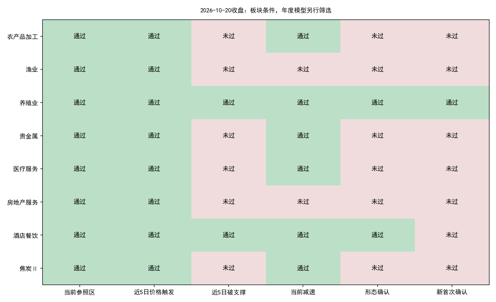
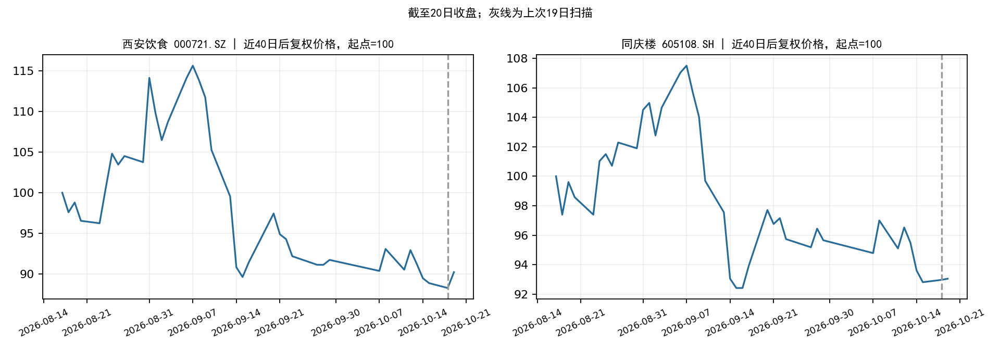

正式策略结果：103个有效板块中，8个观察、8个价格触发、2个当日形态确认；新增独立首次确认1个，年度板块模型通过0个，正式模型新入场候选0只。
20日新增5,568条有效日线，收盘数据冻结完成。数据工程代码、正式策略参数和年度模型权重均未修改；没有重新训练模型。
| 板块 | 窗口 | 20日涨跌 | 峰值回撤 | 形态确认 | 新增首次确认 | 当前条件缺口 |
|---|---|---|---|---|---|---|
| 农产品加工 | 15 | +0.09% | -17.87% | 否 | 否 | 近5日破支撑 |
| 渔业 | 30 | -0.02% | -18.43% | 否 | 否 | 近5日破支撑、减速确认 |
| 养殖业 | 15 | -0.12% | -10.03% | 是 | 是 | 形态齐备，须核对事件去重及年度模型 |
| 贵金属 | 15 | -0.88% | -22.26% | 否 | 否 | 近5日破支撑 |
| 医疗服务 | 10 | +2.30% | -12.77% | 否 | 否 | 近5日破支撑 |
| 房地产服务 | 15 | -0.63% | -12.14% | 否 | 否 | 近5日破支撑、减速确认 |
| 酒店餐饮 | 15 | +0.35% | -15.32% | 是 | 否 | 形态齐备，须核对事件去重及年度模型 |
| 焦炭Ⅱ | 30 | -1.96% | -13.25% | 否 | 否 | 近5日破支撑 |

价格触发、当日形态确认和去重后的首次确认分别记录。只有新首次确认通过年度板块模型，才进入正式个股排序。
| 日期 | 板块 | 年度分数 | 阈值 | 年度模型通过 | 最早入场日 |
|---|---|---|---|---|---|
| 2026-10-20 | 养殖业 | -0.0423149 | 0.00328929 | False | 2026-10-21 |
无。
今日没有通过年度板块模型的新首次事件，因此正式流程未进入个股评分；不能理解为全市场股票逐只评分后被淘汰。
以下是用户指定的酒店餐饮独立观察复核，与正式模型候选分开。即使这里个股条件通过，也不会自动绕过首次事件和板块模型门槛。
| 股票 | 代码 | 19日收盘 | 20日收盘 | 20日涨跌 | 20日价格形态 | 19日排序分数 | 20日排序分数 | 仍在观察名单 | 说明 |
|---|---|---|---|---|---|---|---|---|---|
| 西安饮食 | 000721.SZ | 5.87 | 6 | +2.21% | 是 | 0.003943 | 0.000268 | 是 | 个股条件通过；板块/首次事件入口不通过 |
| 同庆楼 | 605108.SH | 11.77 | 11.78 | +0.08% | 是 | 0.001857 | -0.002074 | 否 | 个股排序分数非正 |
酒店餐饮20日形态确认：是；当日板块涨跌+0.35%。当前代表窗口对应首次确认日为2026-09-17。该首次事件的年度模型分数-0.009877，阈值0.003289；后续重复形态不能自动重开入场。

酒店餐饮全部9只成员重新检查，8只通过资格筛选，6只通过个股价格形态，4只进入价格形态池内正分数的独立观察名单。年度分数仅用于板块内相对排序，不是预期收益或胜率。名称/ST历史通过原查询封装重新拉取，保存在独立研究目录，未更改冻结行情。
| 名称 | 代码 | 20日收盘 | 20日涨跌 | 价格形态 | 排序分数 | 独立观察入选 | 原因 |
|---|---|---|---|---|---|---|---|
| 华天酒店 | 000428.SZ | 3.56 | +1.42% | True | 0.001169 | 1 | 个股条件通过；板块/首次事件入口不通过 |
| 西安饮食 | 000721.SZ | 6 | +2.21% | True | 0.000268 | 1 | 个股条件通过；板块/首次事件入口不通过 |
| 全聚德 | 002186.SZ | 9.14 | +0.55% | True | -0.005274 | 0 | 个股排序分数非正 |
| ST云网 | 002306.SZ | 1.83 | -1.61% | False | 未评分 | nan | ST资格排除 |
| 君亭酒店 | 301073.SZ | 16.49 | +1.29% | True | 0.002782 | 1 | 个股条件通过；板块/首次事件入口不通过 |
| 首旅酒店 | 600258.SH | 11.25 | -0.09% | False | 0.000497 | 0 | 前3日跌幅不足1% |
| 锦江酒店 | 600754.SH | 17.87 | -0.45% | True | 0.003758 | 1 | 个股条件通过；板块/首次事件入口不通过 |
| 金陵饭店 | 601007.SH | 6.57 | -0.15% | False | -0.001126 | 0 | 下跌减速未过；个股排序分数非正 |
| 同庆楼 | 605108.SH | 11.78 | +0.08% | True | -0.002074 | 0 | 个股排序分数非正 |
| date | rows | nontrading_placeholders_removed | basic_coverage | turnover_coverage | adjustment_coverage |
|---|---|---|---|---|---|
| 2.0261e+07 | 5568 | 0 | 1 | 1 | 1 |
摘要 · 新首次确认 · 正式候选 · 与19日板块对比 · 两只股票前后对比 · 代码与模型核验
行情快照：datahub/releases/selection_live_20261020_eod。板块数据：alpha_lab/data/sector_live_datasets/sw_l2_v1_20261020T113446_268600Z。原扫描：alpha_lab/outputs/sector_live_scan/20261020T113957_683276Z。
OPENBLAS_NUM_THREADS=1 OMP_NUM_THREADS=1 MKL_NUM_THREADS=1 python datahub/scripts/frozen_research.py run --release datahub/releases/selection_live_20261020_eod alpha_lab/outputs/strategy_2026_opportunity_scan/20261020_eod/evaluate_existing_models.py --scan alpha_lab/outputs/sector_live_scan/20261020T113957_683276Z